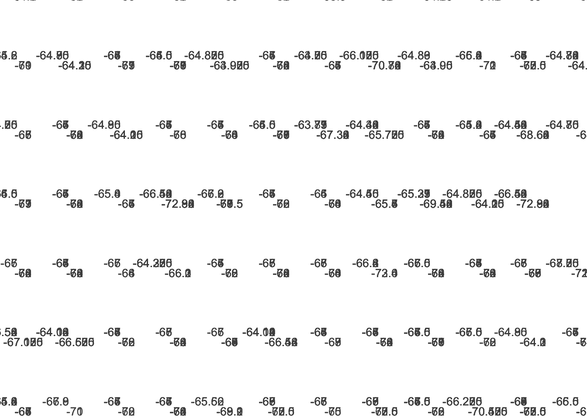

library(readr)
library(dplyr)
Attaching package: 'dplyr'The following objects are masked from 'package:stats':
filter, lagThe following objects are masked from 'package:base':
intersect, setdiff, setequal, unionlibrary(ggplot2)These files are updated by Sage as of 09JULY2024, but still have many errors. Mainly, the lat/long coordinates are mostly fixed for current use. I included another column to fix (by cross referencing event log) the ~20ish single coordinates with errors that Sage identified. I have excluded those for now.
library(readr)
library(dplyr)
Attaching package: 'dplyr'The following objects are masked from 'package:stats':
filter, lagThe following objects are masked from 'package:base':
intersect, setdiff, setequal, unionlibrary(ggplot2)Cruise_Transect_Header_merged_withfixes = header/transect data
Cruise_Transect_Observations_merged = observation data
LTERStns = station points
# manually fixed two long end points (added column next to it labeled as "Old Longitude End (manually fixed)
underway_data <- read_csv(here::here("data/Cruise_Transect_Header_merged_withfixes.csv")) %>%
# filter out where lat/long is not numeric - contains characters
subset(!is.na(as.numeric(`Latitude Start`)) &
!is.na(as.numeric(`Longitude Start`)) &
!is.na(as.numeric(`Latitude End`)) &
!is.na(as.numeric(`Longitude End`))) %>%
# convert to numeric
mutate(`Latitude Start` = as.numeric(`Latitude Start`),
`Longitude Start` = as.numeric(`Longitude Start`),
`Latitude End` = as.numeric(`Latitude End`),
`Longitude End` = as.numeric(`Longitude End`)) %>%
# exclude values outside of specific range
filter(`Latitude Start` >= -80 & `Latitude Start` <= -55,
`Latitude End` >= -80 & `Latitude End` <= -55,
`Longitude Start` >= -80 & `Longitude Start` <= -55,
`Longitude End` >= -80 & `Longitude End` <= -55) %>%
# ensure lat/longs are negative (western & southern hemisphere)
mutate(`Latitude Start` = -abs(`Latitude Start`),
`Latitude End` = -abs(`Latitude End`)) %>%
mutate(`Longitude Start` = -abs(`Longitude Start`),
`Longitude End` = -abs(`Longitude End`))Warning: One or more parsing issues, call `problems()` on your data frame for details,
e.g.:
dat <- vroom(...)
problems(dat)Rows: 3323 Columns: 39
── Column specification ────────────────────────────────────────────────────────
Delimiter: ","
chr (17): studyName, Station Start, Station End, Event Number, Day/Time fix,...
dbl (21): Cruise, Year/Month, YearDay/Hour/Minute, Total Time, Ship Speed, S...
lgl (1): Old Longitude End (manually fixed)
ℹ Use `spec()` to retrieve the full column specification for this data.
ℹ Specify the column types or set `show_col_types = FALSE` to quiet this message.Warning in eval(e, x, parent.frame()): NAs introduced by coercionWarning in eval(e, x, parent.frame()): NAs introduced by coercion
Warning in eval(e, x, parent.frame()): NAs introduced by coercion
Warning in eval(e, x, parent.frame()): NAs introduced by coercion# adjust cruise (years) to be in chronological order
underway_data$Cruise <- factor(underway_data$Cruise, levels = unique(underway_data$Cruise))
levels(underway_data$Cruise) <- c(1993:2019, 2021:2024)
# observation data
obvs_data <- read_csv(here::here("data/Cruise_Transect_Observations_merged.csv")) %>%
mutate(`Count Minute` = as.numeric(`Count Minute`)) %>%
# exclude rows where 'Number' has the value 999
filter(Number != 999) %>%
# filter to include only rows where Species is exactly four alphabetic characters
filter((grepl("^[A-Za-z]{4}$", Species)) & !is.na(`Count Minute`) & `Count Minute` >= 0) Warning: One or more parsing issues, call `problems()` on your data frame for details,
e.g.:
dat <- vroom(...)
problems(dat)Rows: 31721 Columns: 12
── Column specification ────────────────────────────────────────────────────────
Delimiter: ","
chr (7): studyName, Count Minute, Species, Direction, Notes, Stern Count Sta...
dbl (5): Cruise, Event Number, Number, Linkages, Behavior
ℹ Use `spec()` to retrieve the full column specification for this data.
ℹ Specify the column types or set `show_col_types = FALSE` to quiet this message.Warning: There was 1 warning in `mutate()`.
ℹ In argument: `Count Minute = as.numeric(`Count Minute`)`.
Caused by warning:
! NAs introduced by coercion# adjust for sequential yrs
obvs_data$Cruise <- factor(obvs_data$Cruise, levels = unique(obvs_data$Cruise))
levels(obvs_data$Cruise) <- c(1993:2019, 2021:2024)
# #| label: read-csv station data
# station_data <- read_csv(here::here("data/LTERStns.csv"))Merging transect and observation data by corresponding both the Cruise year and event number
underway_data$`Event Number` <- as.numeric(underway_data$`Event Number`)Warning: NAs introduced by coercionobvs_data$`Event Number` <- as.numeric(obvs_data$`Event Number`)
underway_obvs <- obvs_data %>%
left_join(underway_data, by = c("Cruise", "Event Number"), relationship = "many-to-many")
# write csv
# write.csv(underway_obvs, file = "underway_obvs.csv", row.names = TRUE)# species_of_interest <- c("GEPE","ADPE","CHPE")
#
# # filter to include only species of interest
# underway_obvs <- underway_obvs[underway_obvs$Species %in% species_of_interest, ]Lat Lon - each unique species (presence/absence or all records are a dot)
# determine number of unique species for palette
num_species <- length(unique(underway_obvs$Species))
# create a color palette with enough distinct colors
palette <- scales::hue_pal()(num_species)
# plotting presence of species with expanded color palette
spp_presence <- ggplot(underway_obvs, aes(x = `Longitude Start`, y = `Latitude Start`, color = Species)) +
geom_point() +
scale_color_manual(values = palette) +
labs(x = "Longitude", y = "Latitude", title = "Presence of Species") +
theme_minimal() +
theme(plot.background = element_rect(fill = "white", color = NA),
panel.background = element_rect(fill = "white", color = NA))
# ggsave(filename = "spp_presence.png", plot = spp_presence,width = 20, height = 15,
# units = "in",dpi = 300)Lat Lon each species - size of circle is # of individuals
# plot presence of species with size representation based on ind count
facet_peng_spp_dist_size <- ggplot(underway_obvs, aes(x = `Longitude Start`, y = `Latitude Start`, color = Species, size = Number)) +
geom_point(alpha = 0.7) +
scale_color_manual(values = palette) +
scale_size_continuous(range = c(1, 10)) +
labs(x = "Longitude", y = "Latitude",
title = "Species Distribution with Size by Number of Individuals") +
facet_wrap(~ Cruise, nrow = 4) + # facet by Cruise with 4 plots per row
theme_minimal() +
theme(plot.background = element_rect(fill = "white", color = NA),
panel.background = element_rect(fill = "white", color = NA))
# ggsave(filename = "facet_peng_spp_dist_size.png", plot = facet_peng_spp_dist_size,units = "in",dpi = 300)Lat Lon each species - color circle by year OR separate plot for each year
# plot presence of species with size representation based on ind count
total_spp_dist_size <- ggplot(underway_obvs, aes(x = `Longitude Start`, y = `Latitude Start`, color = Species, size = Number)) +
geom_point(alpha = 0.7) +
scale_color_manual(values = palette) +
scale_size_continuous(range = c(1, 10)) +
labs(x = "Longitude", y = "Latitude",
title = "Species Distribution with Size by Number of Individuals") +
theme_minimal() +
theme(plot.background = element_rect(fill = "white", color = NA),
panel.background = element_rect(fill = "white", color = NA))
# ggsave(filename = "total_spp_dist_size.png", plot = total_spp_dist_size, units = "in",dpi = 300)Species plots by year
library(RColorBrewer)
species_of_interest <- c("SPSK","WISP","ADPE","ANTE","GIPE","BBAL","LMSA","GHAL","CAPE","SOFU","GEPE","ANPR","BLPE","BBSP","CHPE","KEGU","BESH","UNSK","ROAL","WCPE","UNPE","DIPE","SNPE","ANPE","BRSK","ARTE","UNSP","UNAL","EMPE","TBPR","FAPR","MAPE","WAAL","WSIP","UNPR","BNSW","SOAL","UNTE","TPPR","AMSH","SGPE","SKSP","GIPR","UNPT","BBPE")
# Filter to include only species of interest
underway_obvs <- underway_obvs[underway_obvs$Species %in% species_of_interest, ]
# Determine the number of unique species
num_species <- length(unique(underway_obvs$Species))
# Generate a color palette based on the number of unique species
color_palette <- brewer.pal(n = min(num_species, 12), name = "Set3")
# If you need more colors than available in the palette, use `colorRampPalette` to create a custom palette
if (num_species > 12) {
color_palette <- colorRampPalette(brewer.pal(12, "Set3"))(num_species)
}
# Create the facet grid plot for all species combined
ggplot(underway_obvs, aes(x = `Longitude Start`, y = `Latitude Start`, size = Number, color = Species)) +
geom_point(alpha = 0.7) + # Plot points with transparency
labs(title = "Species Sightings by Latitude/Longitude", x = "Longitude", y = "Latitude", size = "Number of Individuals") +
theme_minimal() + # Use a minimal theme for the plot
theme(
plot.title = element_text(size = 16, hjust = 0.5, face = "bold"), # Adjust title appearance
axis.text = element_text(size = 10), # Adjust axis text size
axis.title = element_text(size = 12, face = "bold"), # Adjust axis title appearance
strip.text = element_text(size = 12), # Adjust facet label size
strip.background = element_rect(fill = "lightgray") # Facet label background
) +
scale_color_manual(values = color_palette) + # Apply the custom color palette
facet_wrap(~ Cruise + Species, scales = "free") # Facet by year and speciesWarning: Removed 1018 rows containing missing values or values outside the scale range
(`geom_point()`).